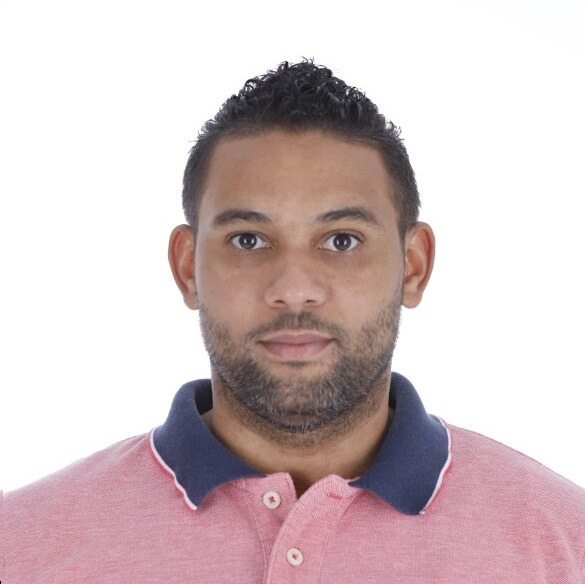

1. Datos personales básicos

Nombre completo: Miguel Enmanuel Castillo Garcia
Fecha de nacimiento: 13 de septiembre de 1986
Lugar de nacimiento: Santo Domingo, Distrito Nacional, República Dominicana
Nacionalidad: Dominicana
Matrícula: DA1734
Carrera: Licenciatura en Informáticas
Universidad: Universidad Autónoma de Santo Domingo (UASD)
2. Contexto familiar
Nací en Santo Domingo, Distrito Nacional, en el seno de una familia formada por padres trabajadores, con principios y valores fundamentados en la fe en Dios Padre de Jesucristo.
Mis padres son Pedro Castillo y Rosalda Garcia. Tengo tres hermanos: Juan Castillo, Angela Castillo y Rosalda Castillo.
Actualmente mi familia está integrada también por mi esposa, Rosa Richardson, y mi hija, Zoé Montserrat Castillo Richardson.
Crecí en un ambiente urbano y familiar, donde mis padres y hermanos tuvieron una influencia importante en mi formación personal. De ellos aprendí valores y principios que han contribuido a formar mi manera de ver la vida, asumir responsabilidades y enfrentar los diferentes retos que se han presentado a lo largo de los años.
3. Formación académica
Educación básica
Realicé mi educación básica en diferentes centros educativos, entre ellos el Colegio San Francisco de Sales, la Escuela República Dominicana y el Colegio Padre Poveda.
Educación media
Posteriormente cursé la educación media en el Liceo República del Paraguay, donde completé mi formación secundaria.
Formación técnica y especializada
A lo largo de mi desarrollo profesional también he procurado complementar mi formación mediante estudios técnicos y especializados.
- Electrónica Básica.
- Desarrollo de software utilizando el lenguaje Java.
- Pruebas automatizadas de aplicaciones Desktop mediante Rational Functional Tester.
- Pruebas automatizadas de aplicaciones Web mediante Selenium.
- Pruebas automatizadas de aplicaciones Mobile mediante Appium.
Formación universitaria
En el año 2009, específicamente durante el segundo semestre, inicié mis estudios universitarios en la Universidad Autónoma de Santo Domingo (UASD), donde actualmente curso la carrera de Licenciatura en Informáticas.
4. Trayectoria profesional
Mi trayectoria profesional ha estado principalmente relacionada con el área de tecnología y aseguramiento de la calidad del software.
Experiencia en pruebas automatizadas
He tenido la oportunidad de desempeñarme como Desarrollador de Pruebas Automatizadas, trabajando con diferentes tipos de aplicaciones y tecnologías.
- Aplicaciones Desktop mediante Rational Functional Tester.
- Aplicaciones Web mediante Selenium.
- Aplicaciones Mobile mediante Appium.
Experiencia actual
Actualmente me desempeño como Desarrollador DevOps Junior, continuando mi proceso de crecimiento profesional dentro del área tecnológica.
Experiencia en el Banco BHD
Una parte importante de mi trayectoria profesional ha sido desarrollada en el Banco BHD, institución en la que he tenido la oportunidad de participar en diferentes experiencias relacionadas con tecnología y automatización.
Considero que cada una de las posiciones y experiencias profesionales en las que he participado ha representado una oportunidad de aprendizaje, crecimiento y desarrollo de nuevas competencias.
5. Producción intelectual o artística
Hasta el momento no he desarrollado sistemas o aplicaciones como parte de una producción profesional o académica formal que considere necesario destacar en esta biografía.
Proyecto personal
Actualmente tengo como proyecto personal el desarrollo de un Sistema de Punto de Ventas (POS).
Este proyecto representa una oportunidad para continuar llevando a la práctica los conocimientos adquiridos en áreas como programación, bases de datos, desarrollo de aplicaciones y tecnologías relacionadas.
El proyecto también forma parte de mi interés por continuar aprendiendo y fortaleciendo mis competencias en el área de informática.
6. Reconocimientos y logros
Reconocimientos laborales
- Empleado Sobresaliente en "Optimismo Hecho Realidad".
- Empleado Sobresaliente en Cumplimiento de sus Metas.
Formación complementaria
- Inglés Avanzado - Universidad APEC, 2007.
- Inglés Avanzado de Inmersión - ILTAE, 2009.
- Electrónica Básica - ITI, centro afiliado a INFOTEP, 2007.
- Electrónica Avanzada - ITI, centro afiliado a INFOTEP, 2007.
- Primer módulo de cuatro (4) de Cisco Certified Network Associate (CCNA) - ITLA, 2011.
- Software Testing de aplicaciones. Postman. Testing de API.
- ISTQB Foundation Level.
- API Testing con Katalon Studio.
- Carrera de Desarrollo Web - Next University (Next_U), etapa de término.
- Selenium, Python, Code Management (GIT) y Jenkins.
- Selenium WebDriver con Python.
- VB.NET Masterclass: Visual Basic y VBScript.
- Automation Testing utilizando Selenium y Katalon Studio.
- Introducción a la Programación con Python.
- Universidad Java: De Cero a Máster.
Más que considerar un único logro como el más importante, considero que cada experiencia académica y profesional ha contribuido a mi crecimiento personal y profesional.
7. Aportes sociales y comunitarios
A lo largo de mi vida he tenido la oportunidad de participar en actividades de servicio y colaboración con otras personas.
Entre estas experiencias se encuentra mi participación como lector de la Palabra de Dios Padre de Jesucristo en la Parroquia Don Bosco, actividad mediante la cual he podido colaborar en el ámbito religioso y comunitario.
También he participado en diferentes proyectos de carácter tecnológico. Entre ellos se encuentra mi experiencia como desarrollador de software en la Dirección General de Impuestos Internos (DGII), donde tuve participación en un proyecto relacionado con el registro tributario.
Esta experiencia me permitió aportar desde el área de la tecnología a un proyecto de utilidad para los procesos de la institución.
Horario de clases - Semestre 2026-02
| Día | Horario | Asignatura | Código |
|---|---|---|---|
| Lunes | 06:00 PM - 09:00 PM | Teleproceso | INF4250 |
| Martes | 05:00 PM - 07:00 PM | Redes De Proc De Datos | INF4260 |
| Miércoles | 07:00 AM - 09:00 AM | Lab Lenguaje de Program III | INF5170 |
| Miércoles | 04:00 PM - 07:00 PM | Ingeniería de Software I | INF5220 |
| Viernes | 10:00 AM - 12:00 PM | Sistemas Y Procedimientos O&M | ADM3350 |
Información de contacto
- Correo personal: miguel.en.castillo.gar@gmail.com
- Correo institucional: DA1734@est.uasd.edu.do
- Teléfono celular: 829-383-1309
Sitio web de la Universidad Autónoma de Santo Domingo .